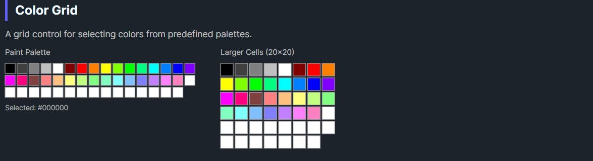

DaisyColorGrid is a grid control for displaying and selecting colors from predefined or custom palettes. It supports multiple built-in palettes (Named Colors, Office 2010, Paint, Web Safe), configurable cell sizes, and a separate custom colors section for user-defined colors.
| Property | Type | Default | Description |
|---|---|---|---|
Color |
Color |
Black |
The currently selected color |
ColorIndex |
int |
-1 |
Index of the selected color in the palette |
Palette |
ColorCollection? |
null |
The main color collection to display |
CustomColors |
ColorCollection? |
null |
Custom colors collection (shown separately) |
ShowCustomColors |
bool |
true |
Whether to show the custom colors section |
CellSize |
Size |
16x16 |
Size of each color cell |
Spacing |
Size |
3x3 |
Spacing between cells |
Columns |
int |
16 |
Number of columns in the grid |
CellBorderColor |
Color |
Gray |
Border color for cells |
SelectionBorderColor |
Color |
Blue |
Border color for selected cell |
AutoAddColors |
bool |
true |
Auto-add selected colors to custom colors |
OnColorChanged |
Action |
null |
Optional callback invoked when color changes |
The ColorCollection class provides several predefined palettes:
| Palette | Method | Colors | Description |
|---|---|---|---|
| Named Colors | CreateNamedColors() |
140+ | All CSS/HTML named colors |
| Office 2010 | CreateOffice2010() |
70 | Microsoft Office 2010 theme colors |
| Paint | CreatePaint() |
48 | MS Paint default palette |
| Web Safe | CreateWebSafe() |
216 | Web-safe 216-color palette |
| Grayscale | CreateGrayscale(n) |
n | Custom grayscale gradient |
// Create palettes
var namedColors = ColorCollection.CreateNamedColors();
var office = ColorCollection.CreateOffice2010();
var paint = ColorCollection.CreatePaint();
var webSafe = ColorCollection.CreateWebSafe();
var grays = ColorCollection.CreateGrayscale(16);grid.ColorChanged += (sender, e) =>
{
Console.WriteLine($"Selected: {e.Color}");
};<colorpicker:DaisyColorGrid
OnColorChanged="{Binding HandleGridColorChanged}" />var grid = new DaisyColorGrid
{
Palette = ColorCollection.CreateOffice2010(),
OnColorChanged = color => SelectedColor = color
};<!-- Basic grid with Office 2010 palette -->
<colorpicker:DaisyColorGrid
Palette="{x:Static colorpicker:ColorCollection.Office2010}"
Color="{Binding SelectedColor, Mode=TwoWay}" />
<!-- Named colors with custom cell size -->
<colorpicker:DaisyColorGrid
Palette="{x:Static colorpicker:ColorCollection.NamedColors}"
CellSize="20,20"
Spacing="2,2"
Columns="20" />
<!-- With custom colors section -->
<colorpicker:DaisyColorGrid
Palette="{Binding MainPalette}"
CustomColors="{Binding UserCustomColors}"
ShowCustomColors="True"
AutoAddColors="True" />
<!-- Compact paint palette -->
<colorpicker:DaisyColorGrid
Palette="{x:Static colorpicker:ColorCollection.Paint}"
CellSize="12,12"
Columns="8" />
<!-- With callback -->
<colorpicker:DaisyColorGrid
OnColorChanged="{Binding OnPaletteColorSelected}" />ColorCollection implements IList and provides:
// Create empty collection
var colors = new ColorCollection();
// Create from existing colors
var colors = new ColorCollection(new[] { Colors.Red, Colors.Green, Colors.Blue });
// Add colors
colors.Add(Colors.Yellow);
colors.AddRange(new[] { Colors.Cyan, Colors.Magenta });
// Find color index (with optional tolerance)
int index = colors.Find(Colors.Red);
int index = colors.Find(someColor, tolerance: 10);
// Static factory methods
ColorCollection.CreateNamedColors();
ColorCollection.CreateOffice2010();
ColorCollection.CreatePaint();
ColorCollection.CreateWebSafe();
ColorCollection.CreateGrayscale(16);
// Collection changed event
colors.CollectionChanged += (s, e) => RefreshUI();AutoAddColors to let users build a custom palette from their selections.Columns to match your layout width (e.g., 8 for narrow panels, 16+ for wide areas).CellSize (12x12) for compact UIs, larger (20x20+) for touch interfaces.ColorIndex property is useful for tracking selection state in data binding scenarios.This control is part of the Flowery.Uno color picker suite, inspired by the Cyotek ColorPicker library (MIT License).